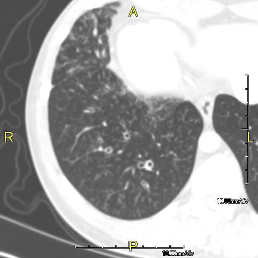

Ficha del catálogo
Bronquiectasias
- Sistema
- Respiratorio
- Modalidad
- TC
- Región
- Tórax
- Dificultad
- Intermedio
Dilatación anormal e irreversible de los bronquios, consecuencia de infecciones repetidas, obstrucción o enfermedades como la fibrosis quística. El paciente presenta tos crónica productiva e infecciones recurrentes. La tomografía de alta resolución es la técnica de referencia y permite además orientar la causa por la distribución.
Técnica
Tomografía de tórax con cortes finos y reconstrucción de alta resolución sin contraste, en inspiración máxima y en decúbito supino.
Qué observar
- Diámetro bronquial mayor que el de la arteria acompañante, con signo del anillo de sello
- Falta de afilamiento bronquial progresivo hacia la periferia
- Bronquios visibles a menos de un centímetro de la superficie pleural
- Engrosamiento de las paredes bronquiales e impactación mucosa
- Patrón de árbol en brote por afectación de la vía aérea pequeña
- Distribución por lóbulos, que orienta hacia la etiología
Hallazgos
Bronquios dilatados con paredes engrosadas, pérdida del afilamiento normal y presencia de secreciones intraluminales.
Perlas
El signo del anillo de sello es el hallazgo definitorio: El bronquio dilatado forma el anillo y la arteria adyacente la piedra. La distribución ayuda, ya que la afectación de lóbulos superiores sugiere fibrosis quística y la de lóbulo medio y língula orienta a infección atípica.
Diagnóstico diferencial
- Enfisema con quistes
- Los espacios carecen de pared y no acompañan a una arteria.
- Panal de abeja de la fibrosis pulmonar
- Quistes subpleurales en hileras con fibrosis reticular asociada.
- Bronquiectasias por tracción
- Aparecen dentro de zonas de fibrosis establecida.
Simuladores
- Artefacto de movimiento respiratorio
- Bronquios normales en pacientes con hipertensión pulmonar
- Quistes pulmonares agrupados
Por modalidad
- RX
- Puede mostrar imágenes en raíl de tranvía y anillos, pero es poco sensible
- TC
- Técnica de elección para diagnóstico y seguimiento
Protocolo
Cortes finos volumétricos con reconstrucción de alta resolución, sin contraste, cubriendo todo el tórax en apnea inspiratoria.
Clasificación
Morfológicamente se describen como cilíndricas, varicosas y quísticas, en orden creciente de gravedad.
Errores frecuentes
- Diagnosticarlas sobre imágenes con artefacto de movimiento
- No comparar el calibre bronquial con el de la arteria acompañante
- Olvidar buscar la causa subyacente, como obstrucción o inmunodeficiencia

bronquiectasias anillo de sello arbol en brote alta resolucion fibrosis quistica tos cronica